Dedication
To Teresa, Liam, Adam, and Kate.
Preface
"I had no idea how much math was involved in computer graphics."
Unfortunately many students of computer graphics have the impression that the writing of computer graphics programs requires knowledge of advanced math; which is patently untrue. Only the understanding of high-school level geometry is required. Using math you already know, this book builds both 2D and 3D applications from the ground up using OpenGL, a standard for graphics programming.
Thoughout the book, I show how to place objects in space, how to draw objects relative to other objects, how to add a camera which moves over time based on user input, and how to transform all the objects into the 2D pixel coordinates of the computer screen. By the end of this book, you will understand the basics of how to create first-person and third-person applications/games. I made this book to show programmers how to make the kind of graphics programs which they want to make, using math they aleady know.
This book is purposely limited in scope, and the applications produced are not particurly pretty nor realistic-looking. For advanced graphics topics, you’ll need to consult other references, such as the OpenGL "red book" and "blue book". Although this book fills a huge gap that other books do not address, those other books are excellent reference books for advanced topics.
Introduction
1. Copyright
© 2017, William Emerison Six. This book is free, licensed under Attribution-NonCommercial-ShareAlike 4.0 International (CC BY-NC-SA 4.0). https://creativecommons.org/licenses/by-nc-sa/4.0/. The source code is licensed under the Apache 2.0 license.
2. Basics
The device attached to a computer which displays information to the user is called a monitor. The monitor is composed of a two-dimensional array of light-emitting elements called pixel. At a given time, each individual pixel is instructed to display one specific color, represented within the computer as a number. The aggregate of the colors at each pixel at one moment in time, called a frame, provides a picture that has some meaning to the human user.
In OpenGL, the bottom left pixel of a window is coordinate (0,0). The top right is (window_width,window_height)
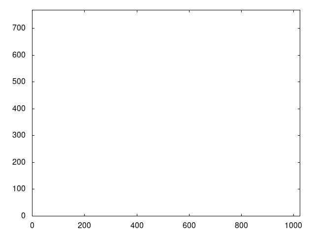
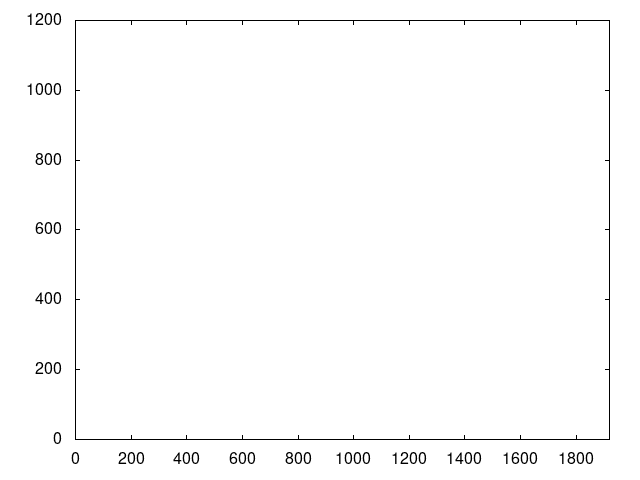
Frames are created within the computer and sent to the monitor at a rate over time, called the framerate, measured in Hertz. By updating frames quickly and at a constant rate, the computer provides the end-user with the illusion of motion.
TODO - insert 3 20x20 frames which show motion
2.1. Opening a Window
Desktop operating systems allow the user to run more than one program at a time, where each program draws into a subsect of the monitor called a window.
To create and to open a window in a cross-platform manner, this
book will call procedures provided by the widely-ported GLFW library (supporting Windows, macOS, Linux).
GLFW also provides procedures for receiving
keyboard input, controller input
[tested with a wired XBox 360 controller]
, and
to load images from the filesystem.
Much of the code listed from here until section[the-event-loop] will be of little interest upon first reading. As such, the reader may choose to skip ahead to section[the-event-loop] now.
The code for the entire book is available at https://github.com/billsix/modelviewprojection, contained within "src/main.cpp". The code, but not the contents of the book, is licenced using the open-source Apache 2.0 license.
2.1.1. Include Headers
1: /* src/main.cpp 2: * 3: * Copyright 2016-2017 - William Emerison Six 4: * All rights reserved 5: * main.cpp is Distributed under Apache 2.0 6: */ 7: #include <iostream> 8: #include <vector> 9: #include <functional> 10: #include <cmath> 11: #include "main.h"
2.1.2. Create Data Structure to Represent the Window
Create a pointer for the window. If you are new to C or C++, don’t fret over what a pointer is, as the majority of this book does not require knowledge of pointers. Programmers of any mainstream language (Java, Python, C#, etc) should be able to understand the content of this book.
1: GLFWwindow* window;
-Log any errors.
1: static void error_callback(int error, const char* description) 2: { 3: fprintf(stderr, "Error: %s\n", description); 4: }
2.1.3. Define main
-Set the error-handling callback
1: int main(int argc, char *argv[]) 2: { 3: glfwSetErrorCallback(error_callback); 4:
2.1.4. Let the User Pick the Chapter Number to Run.
1: std::cout << "Input Chapter Number to run: (2-17): " << std::endl; 2: int chapter_number; 3: std::cin >> chapter_number ;
2.1.5. GLFW/OpenGL Initialization
-Initialize GLFW.
1: //initialize video support, joystick support, etc. 2: if (!glfwInit()){ 3: return -1; 4: }
One frame is created incrementally over time on the CPU, but the frame
is sent to the monitor
only when frame is completely drawn, and each pixel has a color.
The act of sending the frame to the monitor is called flushing
the frame.
Flushing takes time,
and if the call to flush were to block
[meaning it would not return control back to the call-ing procedure until the flush is complete]
, we would
have wasted CPU time. To avoid this,
OpenGL has two *framebuffers*
[regions of memory which will eventually contain the full data for a frame]
,
only one of which is "active", or writable, at a given time.
"glfwSwapBuffers" is a non-blocking call which initiates the flushing
the current buffer, and which switches the current writable framebuffer to the
other one, thus allowing the CPU to resume.
-Set the version of OpenGL
OpenGL has been around a long time, and has multiple, possibly incompatible versions.
1: glfwWindowHint(GLFW_CONTEXT_VERSION_MAJOR, 1); 2: glfwWindowHint(GLFW_CONTEXT_VERSION_MINOR, 4);
Create a 500 pixel by 500 pixel window, which the user can resize.
1: /* Create a windowed mode window and its OpenGL context */ 2: if(!(window = glfwCreateWindow(500, 3: 500, 4: "modelviewprojection", 5: NULL, 6: NULL))) 7: { 8: glfwTerminate(); 9: return -1; 10: }
A native application which links against shared libraries typically knows at compile-time exactly which procedures are provided by the shared libraries. But unlike typical shared libraries, a system’s OpenGL shared library is supplied to the user by the graphics card vendor, who may not provide every OpenGL procedure from every version of OpenGL (of which there are many). To make programming in OpenGL easier, all calls to OpenGL are actually calls to "GLEW" procedures, which effectively are function pointers. To ensure that those function pointers are initialized, call "glewInit". See [sharedLibAppendix] for a more full explanantion.
1: glewInit(); // make OpenGL calls possible 2: /* Make the window's context current */ 3: glfwMakeContextCurrent(window);
For every frame drawn, each pixel has a default color, set by calling "glClearColor". "0,0,0,1", means black "0,0,0", without transparency (the "1").
1: glClearColor(/*red*/ 0.0, 2: /*green*/ 0.0, 3: /*blue*/ 0.0, 4: /*alpha*/ 1.0);
Set the default depth for all fragments
1: glClearDepth(-1.1f);
Set the depth test for all fragments.
1: glDepthFunc(GL_GREATER);
Enable blending of new values in a fragment with the old value.
1: glEnable(GL_BLEND);
Specify how a given fragment’s color value within the framebuffer combines with a second color. This new blended value is then set for the fragment.
1: glBlendFunc(GL_SRC_ALPHA, GL_ONE_MINUS_SRC_ALPHA); 2: 3: glMatrixMode(GL_PROJECTION); 4: glLoadIdentity(); 5: glMatrixMode(GL_MODELVIEW); 6: glLoadIdentity();
Map the normalized device-coordinates to screen coordinates, explained later.
1: { 2: int w, h; 3: glfwGetFramebufferSize(window, &w, &h); 4: glViewport(/*min_x*/ 0, 5: /*min_y*/ 0, 6: /*width_x*/ w, 7: /*width_y*/ h); 8: }
2.1.6. The Event Loop
When you pause a movie, motion stops and you see one picture. Movies are composed of sequence of pictures, when rendered in quick succession, provide the illusion of motion.
Interactive computer graphics are rendered the same way, one "frame" at a time.
Render a frame for the user-selected demo, flush the complete frame to the monitor. Unless the user closed the window, repeat indefinitely.
1: while (!glfwWindowShouldClose(window)) 2: { 3: // set viewport 4: int width = 0, height = 0; 5: glfwGetFramebufferSize(window, &width, &height); 6: glViewport(0, 0, 7: width, height); 8: 9: render_scene(&chapter_number); 10: // flush the frame 11: glfwSwapBuffers(window); 12: 13: /* Poll for and process events */ 14: glfwPollEvents(); 15: }
2.1.7. The User Closed the App, Exit Cleanly.
1: glfwTerminate(); 2: return 0; 3: } // end main
2.2. Render the Selected Demo
Regardless of which demo will be run, certain things need to happen every frame. The color of each pixel withith the current framebuffer is reset to a default color.
1: void render_scene(int *chapter_number){ 2: // clear the framebuffer 3: glClear(GL_COLOR_BUFFER_BIT); 4: glClear(GL_DEPTH_BUFFER_BIT);
When a graphics application is executing, it is creating new frames (pictures) at some rate (e.g. 60 frames per second). At any given frame, the user of the application might do something, (e.g. move the mouse, click, type on the keyboard, close the application).
At the beginning of every frame, ask OpenGL if it received one of these events since we last asked (i.e., the previous frame).
3. Black Screen
To understand the material of this book well, the reader is advised to run the compile the program and run the demos. To do so, the source code for this book may be obtained at https://github.com/billsix/modelviewprojection. It has been tested on Windows 10 (Visual Studio Community 2017), Linux, and OS X.
Once built, execute "modelviewprojection". When prompted, type "2" and then press the "Enter" key.
The first demo is the least interesting graphical program possible.
The event loop, defined in section [the-event-loop], executes a few procedures before calling the current procedure.
-Sets the color at every pixel black. (A constant color is better than whatever color happened to be the previous time it was drawn.)
-If the user resized the window, reset OpenGL’s mappings from normalized-device-coordinates to screen-coordinates.
-Cleared the depth buffer (don’t worry about this for now).
1: if(2 == *chapter_number){ 2: return; 3: }
When this code returns, the event loop flushes (i.e) sends the frame to the monitor. Since no geometry was drawn, the color value for each pixel is still black.
Each color is represende by a number, so the frame is something like this:
bbbbbbbbbbbbbbbbbbbbbbbbbbbbbbbbbbbbb bbbbbbbbbbbbbbbbbbbbbbbbbbbbbbbbbbbbb bbbbbbbbbbbbbbbbbbbbbbbbbbbbbbbbbbbbb bbbbbbbbbbbbbbbbbbbbbbbbbbbbbbbbbbbbb bbbbbbbbbbbbbbbbbbbbbbbbbbbbbbbbbbbbb bbbbbbbbbbbbbbbbbbbbbbbbbbbbbbbbbbbbb bbbbbbbbbbbbbbbbbbbbbbbbbbbbbbbbbbbbb bbbbbbbbbbbbbbbbbbbbbbbbbbbbbbbbbbbbb bbbbbbbbbbbbbbbbbbbbbbbbbbbbbbbbbbbbb bbbbbbbbbbbbbbbbbbbbbbbbbbbbbbbbbbbbb bbbbbbbbbbbbbbbbbbbbbbbbbbbbbbbbbbbbb bbbbbbbbbbbbbbbbbbbbbbbbbbbbbbbbbbbbb
The event loop then calls this code over and over again, and since we retain no state and we draw nothing, a black screen will be diplayed every frame until the user closes the window, and says to himself, "why did I buy Doom 3"?
4. Draw Paddles
A black screen is not particularly interesting, so let’s draw something, say, two rectangles. Where should they be, and what color should they be?
"glColor3f" sets a global variable, which makes it the color to be used for the subsequently-drawn graphical shape. The background will be black, so lets make the first paddle white, and a second paddle yellow.
"glBegin(GL_QUADS)" tells OpenGL that we will soon specify 4 vertices, (i.e. points) which define the quadrilateral. The vertices will be specified by calling "glVertex2f" 4 times.
1: if(3 == *chapter_number){ 2: chapter3:
Draw paddle 1.
1: // the color white has 1.0 for r,g,and b components. 2: glColor3f(/*red*/ 1.0, 3: /*green*/ 1.0, 4: /*blue*/ 1.0); 5: glBegin(GL_QUADS); 6: { 7: glVertex2f(/*x*/ -1.0, 8: /*y*/ -0.3); 9: glVertex2f(/*x*/ -0.8, 10: /*y*/ -0.3); 11: glVertex2f(/*x*/ -0.8, 12: /*y*/ 0.3); 13: glVertex2f(/*x*/ -1.0, 14: /*y*/ 0.3); 15: } 16: glEnd();
"glEnd()" tells OpenGL that we have finished providing vertices for the begun quadrilateral.
The framebuffer, which has not yet been flushed to the monitor, has geometry which looks like this:
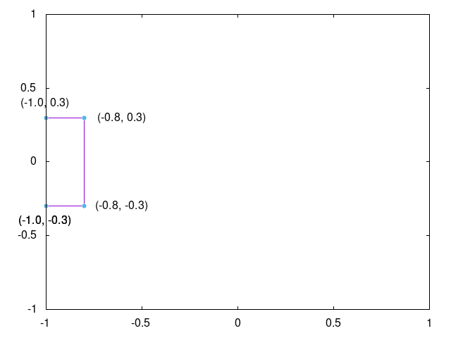
Draw paddle 2.
1: // the color yellow has 1.0 for r and g components, 2: // with 0.0 for b. 3: // Why is that? The author doesn't know, consult the internet 4: glColor3f(/*red*/ 1.0, 5: /*green*/ 1.0, 6: /*blue*/ 0.0); 7: glBegin(GL_QUADS); 8: { 9: glVertex2f(/*x*/ 0.8, 10: /*y*/ -0.3); 11: glVertex2f(/*x*/ 1.0, 12: /*y*/ -0.3); 13: glVertex2f(/*x*/ 1.0, 14: /*y*/ 0.3); 15: glVertex2f(/*x*/ 0.8, 16: /*y*/ 0.3); 17: } 18: glEnd();
The framebuffer, which has not yet been flushed to the monitor, has geometry which looks like this:

1: return; 2: }
The frame sent to the monitor is a set of values like this:
bbbbbbbbbbbbbbbbbbbbbbbbbbbbbbbbbbbbb bbbbbbbbbbbbbbbbbbbbbbbbbbbbbbbbbbbbb bbbbbbbbbbbbbbbbbbbbbbbbbbbbbbbbbbbbb wwwwwbbbbbbbbbbbbbbbbbbbbbbbbbbbyyyyy wwwwwbbbbbbbbbbbbbbbbbbbbbbbbbbbyyyyy wwwwwbbbbbbbbbbbbbbbbbbbbbbbbbbbyyyyy wwwwwbbbbbbbbbbbbbbbbbbbbbbbbbbbyyyyy wwwwwbbbbbbbbbbbbbbbbbbbbbbbbbbbyyyyy wwwwwbbbbbbbbbbbbbbbbbbbbbbbbbbbbbbbb bbbbbbbbbbbbbbbbbbbbbbbbbbbbbbbbbbbbb bbbbbbbbbbbbbbbbbbbbbbbbbbbbbbbbbbbbb bbbbbbbbbbbbbbbbbbbbbbbbbbbbbbbbbbbbb
What do we have to do to convert from normalized-device-coordinates into individual colors for each pixel? Nothing, OpenGL does that for us; therefore we never have to think in terms of pixels, only in terms of vertices of shapes, specified by normalized-device-coordinates.
Why is that desirable?
4.1. Normalized-Device-Coordinates
The author owns two monitors, one which has 1024x768 pixels, and one which has
1920x1200 pixels. When he purchases a game from Steam, he expects that his game
will run correctly on either monitor, in full-screen mode. If a graphics programmer
had to explictly set each indiviual pixel’s color, the the programmer would have to
program using "screen-space"
[Any "space" means a system of numbers which you’re using.
Screen-space means you’re specifically using pixel coordinates, i.e, set pixel (5,10) to be red]
.
What looks alright is screen-space on a large monitor…
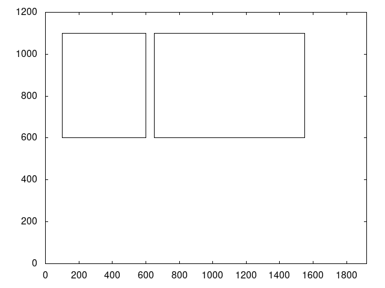
isn’t even the same picture on a smaller monitor.
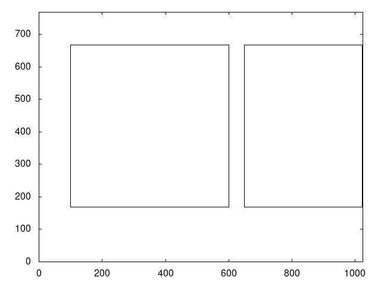
Like any good program or library, OpenGL abstracts over screen-space, thus freeing the
programmer from caring about screen size. If a programmer does not want to program
in discrete
[discrete means integer values, not continuous]
screen-space,
what type of numbers should he use? Firstly, it should be a continuous space, meaning
that it should be in decimal numbers. Because if a real-world object is 10.3 meters long, a programmer
should be able to enter "float foo = 10.3". Secondly, it should be a fixed range vertically
and an fixed range horizontally. OpenGL will have to convert points from some space to screen-space,
and since OpenGL does this in hardware (i.e. you can’t programmatically change how the conversion
happens), it should be a fixed size.
OpenGL uses normalized-device-coordinates
[normalized- meaning a distance value of
1; device- the monitor; coordinates- the system of numbers (i.e. space) in which you are working]
,
which is a continous space from -1.0 to 1.0 horizontally,
and -1.0 to 1.0 vertically.
By specifying geometry using normalized-device-coordinates, OpenGL will automatically convert from a continuous, -1.0 to 1.0 space, to discrete pixel-space.
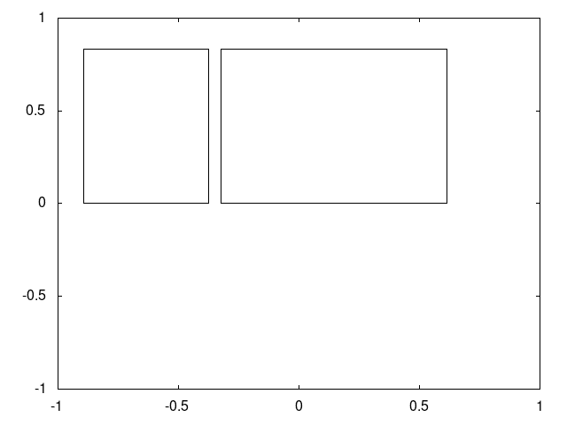
Whether we own a small monitor
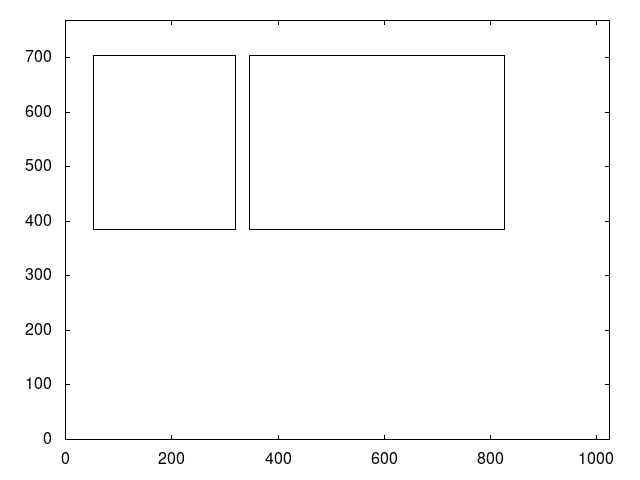
or a large monitor.
-Exercise 1. The window is resizable by the user while it runs. Do the paddles both still appear in the window if you make it really thin? What if you make it very wide?
Answer - (Regardless of the window’s width to height ratio, the pixel in the upper left of the window still maps to normalized-device-coordinate (-1.0,-1.0), and the pixel in the bottom right of the window still maps to (1.0,1.0).
-Exercise 2. How would you convert from ndc-space to screen-space, given a monitor width w and height h?
5. Keeping the Paddles Proportional
5.1. Create procedure to ensure proportionality
In the previous chapter, if the user resized the window, the paddles looked bad, as they were shrunk in one direction if the window became too thin or too fat.
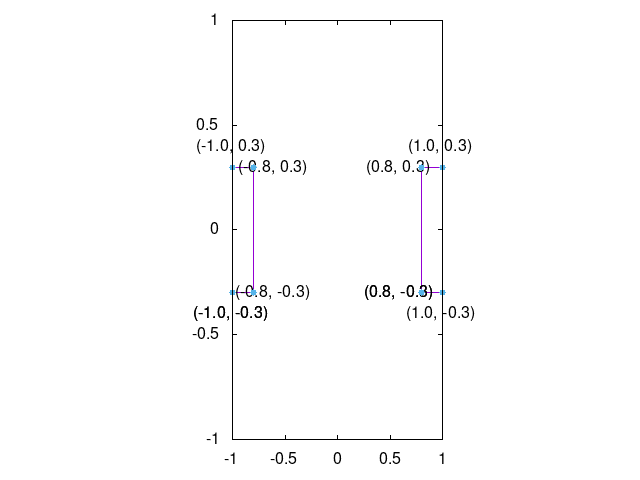

Assume that this is a problem for the application we are making. What would a solution be? Ideally, we would like to draw our paddles with a black background within a square region in the center of the window, regardless of the dimensions of the window.
OpenGL has a solution for us. The viewport is a rectangular region within the window into which OpenGL will render. The normalized-device-coordinates will therefore resolve to the sub-screen space of the viewport, instead of the whole window.
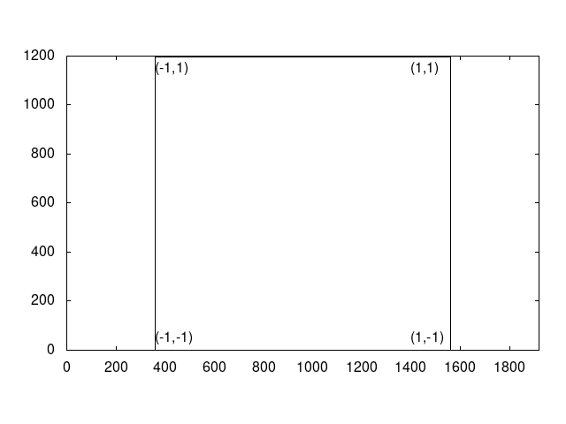
Because we will only draw in a subset of the window, and because all subsequent chapters will use this functionality, I have created a procedure for use in all chapters. "draw_in_square_viewport" is a C++ lambda, which just means that it’s a procedure defined at runtime. Don’t worry about the details of lambdas, just know that the following two types are the same:
//void draw_in_square_viewport(); //std::function<void()> draw_in_square_viewport;
The pattern is
//RETURN_TYPE function_name(ARG_LIST); //std::function<RETURN_TYPE(ARGLIST)> functionName;
1: std::function<void()> draw_in_square_viewport = [&](){ 2: // clear all of the background to grey 3: glClearColor(/*red*/ 0.2, 4: /*green*/ 0.2, 5: /*blue*/ 0.2, 6: /*alpha*/ 1.0); 7: glClear(GL_COLOR_BUFFER_BIT); 8: 9: // resize drawing area 10: int w, h; 11: glfwGetFramebufferSize(window, &w, &h); 12: int min = w < h ? w : h; 13: glViewport(/*min_x*/ 0 + (w - min)/2, 14: /*min_y*/ 0 + (h - min)/2, 15: /*width_x*/ min, 16: /*width_y*/ min); 17: 18: glEnable(GL_SCISSOR_TEST); 19: glScissor(/*min_x*/ 0 + (w - min)/2, 20: /*min_y*/ 0 + (h - min)/2, 21: /*width_x*/ min, 22: /*width_y*/ min); 23: 24: glClearColor(/*red*/ 0.0, 25: /*green*/ 0.0, 26: /*blue*/ 0.0, 27: /*alpha*/ 1.0); 28: glClear(GL_COLOR_BUFFER_BIT); 29: glDisable(GL_SCISSOR_TEST); 30: };
5.2. Set the viewport, and then execute the code from chapter 3.
1: if(4 == *chapter_number){ 2: draw_in_square_viewport(); 3: goto chapter3; 4: }
Yes, the author is aware that "goto" statements are frowned upon. But would the reader prefer for chapter 3’s code to be duplicated here?
6. Move the Paddles using the Keyboard
| Keyboard Input | Action |
|---|---|
i |
Move Right Paddle Down |
w |
Move Left Paddle Up |
s |
Move Left Paddle Down |
k |
Move Right Paddle Up |
Paddles which don’t move are quite boring. Let’s make them move up or down by getting keyboard input.
Static variables are initialized to a value only the first time the procedure is executed.
In subsequent calls to "render_scene", they retain the value they had the last time
"render_scene" was called
[Since the rest of the demos are entirely defined
within "render_scene", all statically defined variables, such as these offsets, are
available to every demo, and as such, future demos will reference these values]
.
1: static GLfloat paddle_1_offset_Y = 0.0; 2: static GLfloat paddle_2_offset_Y = 0.0;
-If s is pressed this frame, subtract 0.1 more from paddle_1_offset_Y. If the key continues to be held down over time, paddle_1_offset_Y will continue to decrease.
-If w is pressed this frame, add 0.1 more to paddle_1_offset_Y.
-If k is pressed this frame, subtract 0.1 more from paddle_2_offset_Y.
-If i is pressed this frame, add 0.1 more to paddle_2_offset_Y.
Remember, these are static variables, so changes to these variables will accumulate across frames.
1: if (glfwGetKey(window, GLFW_KEY_S) == GLFW_PRESS){ 2: paddle_1_offset_Y -= 0.1; 3: } 4: if (glfwGetKey(window, GLFW_KEY_W) == GLFW_PRESS){ 5: paddle_1_offset_Y += 0.1; 6: } 7: if (glfwGetKey(window, GLFW_KEY_K) == GLFW_PRESS){ 8: paddle_2_offset_Y -= 0.1; 9: } 10: if (glfwGetKey(window, GLFW_KEY_I) == GLFW_PRESS){ 11: paddle_2_offset_Y += 0.1; 12: }
1: if(5 == *chapter_number){ 2: draw_in_square_viewport();
Draw paddle 1, relative to the world-space origin.
1: glColor3f(/*red*/ 1.0, 2: /*green*/ 1.0, 3: /*blue*/ 1.0);
Add paddle_1_offset_Y to the "y" component of every vertex
1: glBegin(GL_QUADS); 2: { 3: glVertex2f(/*x*/ -1.0, 4: /*y*/ -0.3+paddle_1_offset_Y); 5: glVertex2f(/*x*/ -0.8, 6: /*y*/ -0.3+paddle_1_offset_Y); 7: glVertex2f(/*x*/ -0.8, 8: /*y*/ 0.3+paddle_1_offset_Y); 9: glVertex2f(/*x*/ -1.0, 10: /*y*/ 0.3+paddle_1_offset_Y); 11: } 12: glEnd();
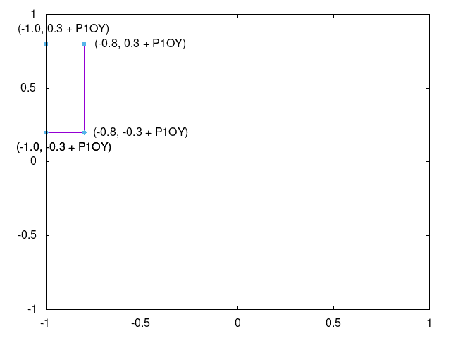
Draw paddle 2, relative to the world-space origin.
1: glColor3f(/*red*/ 1.0, 2: /*green*/ 1.0, 3: /*blue*/ 0.0);
Add paddle_2_offset_Y to the "y" component of every vertex
1: glBegin(GL_QUADS); 2: { 3: glVertex2f(/*x*/ 0.8, 4: /*y*/ -0.3+paddle_2_offset_Y); 5: glVertex2f(/*x*/ 1.0, 6: /*y*/ -0.3+paddle_2_offset_Y); 7: glVertex2f(/*x*/ 1.0, 8: /*y*/ 0.3+paddle_2_offset_Y); 9: glVertex2f(/*x*/ 0.8, 10: /*y*/ 0.3+paddle_2_offset_Y); 11: } 12: glEnd(); 13: return; 14: }
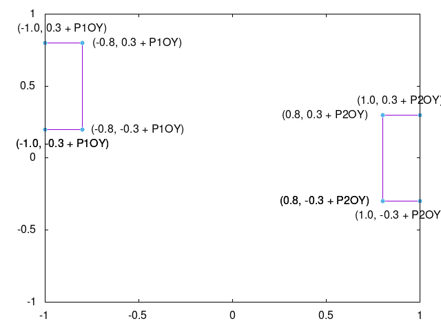
7. Model Vertices with a Data-Structure
| Keyboard Input | Action |
|---|---|
i |
Move Right Paddle Down |
w |
Move Left Paddle Up |
s |
Move Left Paddle Down |
k |
Move Right Paddle Up |
Transforming vertices, such as translating, is the core concept of computer graphics. So create a class for common transformations.
1: class Vertex { 2: public: 3: // members 4: GLfloat x; 5: GLfloat y; 6: // construtor 7: Vertex(GLfloat the_x, GLfloat the_y): 8: x(the_x), 9: y(the_y) 10: {}
7.1. Translation
Rather than incrementing y values before calling "glVertex", instead call "translate" on the vertex.
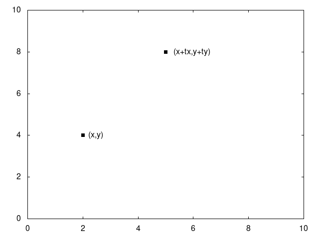
1: Vertex translate(GLfloat translate_x, 2: GLfloat translate_y) 3: { 4: return Vertex(/*x*/ x + translate_x, 5: /*y*/ y + translate_y); 6: };
7.2. Scaling

Similarly, we can expand or shrink the size of an object by "scale"ing each of the vertices of the object, assuming the object’s center is at (0,0).
1: Vertex scale(GLfloat scale_x, 2: GLfloat scale_y) 3: { 4: return Vertex(/*x*/ x * scale_x, 5: /*y*/ y * scale_y); 6: };
7.3. Rotation Around Origin (0,0)
We can also rotate an object around (0,0) by rotating all of the object’s vertices around (0,0). Although defined now, this won’t be used until later.
In high school math, you will have learned about sin, cos, and tangent. Typically the angles are described on the unit circle, where a rotation starts from the positive x axis. We can expand on this knowledge, allowing us to rotate a given vertex around the origin (0,0). This is done by separating the x and y value, rotating each of them seperately, and then adding the results together.
That might not have been fully clear. Let me try again. The vertex (0.5,0.4) can be separated into two vertices, (0.5,0) and (0,0.4).
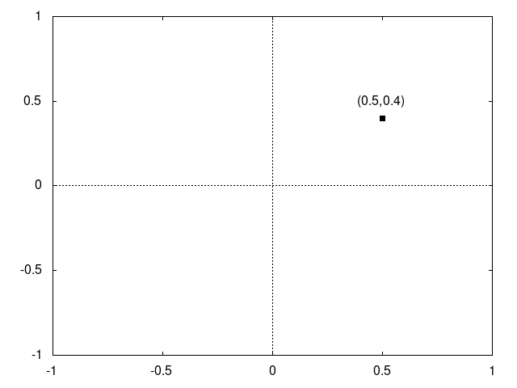
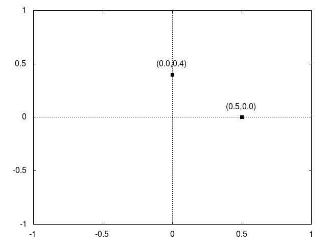
These vertices can be added together to create the original vertex. But, before we do that, let’s rotate each of the vertices.
(0.5,0) is on the x-axis, so rotating it by "angle" degrees, results in vertex (0.5*cos(angle), 0.5*sin(angle)). Notice that both the x and y values are multiplied by 0.5. This is because rotations should not affect the distance of the point from the origin (0,0). (0.5,0) has length 0.5. (cos(angle), sin(angle) has length 1. By multipling both the x and y component by 0.5, we are scaling the vertex back to its original distance from the origin.
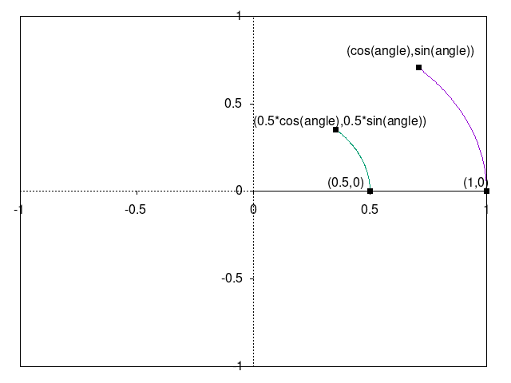
(0,0.4) is on the y-axis, so rotating it by "angle" degrees, results in vertex (0.4*-sin(angle), 0.4*cos(angle)).
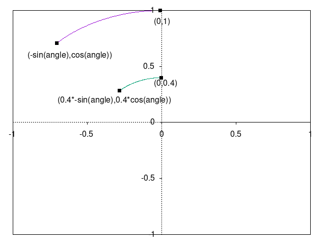
Wait. Why is negative sin applied to the angle to make the x value, and cos applied to angle to make the y value? Trigonometric operations such as sin, cos, and tangent assume that the rotation is happening on the unit circle, starting from (1,0) on the x axis. Since we want to rotate an angle starting from (0,1) on the y axis, we sin and cos must be swapped. Sin is positive from 0 to 90 degrees, but we want a negative value for our rotation of the y axis since the rotation is happening counter-clockwise, hence the negative sin.
After the rotations have been applied, sum the results to get your vertex rotated around the origin!
(0.5*cos(angle), 0.5*sin(angle)) + (0.4*-sin(angle), 0.4*cos(angle)) = (0.5*cos(angle) + 0.4*-sin(angle), 0.5*sin(angle) + 0.4*cos(angle))
1: Vertex rotate(GLfloat angle_in_radians) 2: { 3: return Vertex(/*x*/ x*cos(angle_in_radians) - y*sin(angle_in_radians), 4: /*y*/ x*sin(angle_in_radians) + y*cos(angle_in_radians)); 5: };
7.4. Rotation Around Arbitrary Vertex
But what if we don’t want to rotate around the origin? What if you want to rotate around any other vertex?
It’s quite simple. Translate the vertex to be rotated into a vertex which is
relative to the rotation point. Rotate it around the origin. Then reverse the
translation.
[To the advanced reader, yes, this is unwise to do in practice.
Real world development is Mistake-Driven-Development. Presenting solutions
without making mistakes deprives the learner.]
.
1: Vertex rotate(GLfloat angle_in_radians, 2: Vertex center) 3: { 4: return translate(/*x*/ -center.x, 5: /*y*/ -center.y). 6: rotate(angle_in_radians). 7: translate(/*x*/ center.x, 8: /*y*/ center.y); 9: }; 10: };
1: if(6 == *chapter_number){ 2: draw_in_square_viewport(); 3: std::vector<Vertex> paddle = { 4: Vertex(-0.1, -0.3), 5: Vertex(0.1, -0.3), 6: Vertex(0.1, 0.3), 7: Vertex(-0.1, 0.3) 8: };
Draw paddle 1, relative to the world-space origin.
1: glColor3f(/*red*/ 1.0, 2: /*green*/ 1.0, 3: /*blue*/ 1.0); 4: glBegin(GL_QUADS); 5: { 6: for(Vertex v : paddle){ 7: Vertex newPosition = v.translate(/*x*/ -0.9, 8: /*y*/ paddle_1_offset_Y); 9: glVertex2f(/*x*/ newPosition.x, 10: /*y*/ newPosition.y); 11: } 12: } 13: glEnd();
Draw paddle 2, relative to the world-space origin.
1: glColor3f(/*red*/ 1.0, 2: /*green*/ 1.0, 3: /*blue*/ 0.0); 4: glBegin(GL_QUADS); 5: { 6: for(Vertex v : paddle){ 7: Vertex newPosition = v.translate(/*x*/ 0.9, 8: /*y*/ paddle_2_offset_Y); 9: glVertex2f(/*x*/ newPosition.x, 10: /*y*/ newPosition.y); 11: } 12: } 13: glEnd(); 14: return; 15: }
8. Model-space
| Keyboard Input | Action |
|---|---|
i |
Move Right Paddle Down |
w |
Move Left Paddle Up |
s |
Move Left Paddle Down |
k |
Move Right Paddle Up |
Normalized-device-coordinates are not a natural system of numbers for use by humans. Imagine that the paddles in the previous chapters exist in real life, and are 20 meters wide and 60 meters tall. The graphics programmer should be able to use those numbers directly; they shouldn’t have to manually trasform the distances into normalized-device-coordinates.
Whatever a convenient numbering system is (i.e. coordinate system) for modeling objects
is called "model-space". Since a paddle has four corners, which corner should be a
the origin (0,0)? If you don’t already know what you want at the origin, then
none of the corners should be; instead put the center of the object
at the origin
[By putting the center of the object at the origin,
scaling and rotating the object are trivial]
.
1: const std::vector<Vertex> paddle = { 2: Vertex(-10.0, -30.0), 3: Vertex(10.0, -30.0), 4: Vertex(10.0, 30.0), 5: Vertex(-10.0, 30.0) 6: };
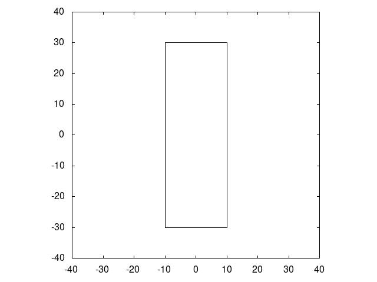
1: if (glfwGetKey(window, GLFW_KEY_S) == GLFW_PRESS){ 2: paddle_1_offset_Y -= 10.0; 3: } 4: if (glfwGetKey(window, GLFW_KEY_W) == GLFW_PRESS){ 5: paddle_1_offset_Y += 10.0; 6: } 7: if (glfwGetKey(window, GLFW_KEY_K) == GLFW_PRESS){ 8: paddle_2_offset_Y -= 10.0; 9: } 10: if (glfwGetKey(window, GLFW_KEY_I) == GLFW_PRESS){ 11: paddle_2_offset_Y += 10.0; 12: }
Draw paddle 1, relative to the world-space origin.
1: if(7 == *chapter_number){ 2: draw_in_square_viewport(); 3: glColor3f(/*red*/ 1.0, 4: /*green*/ 1.0, 5: /*blue*/ 1.0); 6: glBegin(GL_QUADS); 7: { 8: for(Vertex modelspace : paddle){ 9: Vertex worldSpace = modelspace.translate(/*x*/ -90.0, 10: /*y*/ paddle_1_offset_Y); 11: Vertex ndcSpace = worldSpace.scale(/*x*/ 1.0/100.0, 12: /*y*/ 1.0/100.0); 13: glVertex2f(/*x*/ ndcSpace.x, 14: /*y*/ ndcSpace.y); 15: } 16: } 17: glEnd();
Draw paddle 2, relative to the world-space origin
1: glBegin(GL_QUADS); 2: { 3: glColor3f(/*red*/ 1.0, 4: /*green*/ 1.0, 5: /*blue*/ 0.0); 6: for(Vertex modelspace : paddle){ 7: Vertex worldSpace = modelspace.translate(/*x*/ 90.0, 8: /*y*/ paddle_2_offset_Y); 9: Vertex ndcSpace = worldSpace.scale(/*x*/ 1.0/100.0, 10: /*y*/ 1.0/100.0); 11: glVertex2f(/*x*/ ndcSpace.x, 12: /*y*/ ndcSpace.y); 13: } 14: } 15: glEnd(); 16: return; 17: }
9. Rotate the Paddles About their Center
| Keyboard Input | Action |
|---|---|
j |
Decrease Right Paddle’s Rotation |
w |
Move Left Paddle Up |
s |
Move Left Paddle Down |
k |
Move Right Paddle Up |
i |
Move Right Paddle Down |
d |
Increase Left Paddle’s Rotation |
a |
Decrease Left Paddle’s Rotation |
l |
Increase Right Paddle’s Rotation |
1: static GLfloat paddle_1_rotation = 0.0; 2: static GLfloat paddle_2_rotation = 0.0; 3: // update_rotation_of_paddles 4: if (glfwGetKey(window, GLFW_KEY_A) == GLFW_PRESS){ 5: paddle_1_rotation += 0.1; 6: } 7: if (glfwGetKey(window, GLFW_KEY_D) == GLFW_PRESS){ 8: paddle_1_rotation -= 0.1; 9: } 10: if (glfwGetKey(window, GLFW_KEY_J) == GLFW_PRESS){ 11: paddle_2_rotation += 0.1; 12: } 13: if (glfwGetKey(window, GLFW_KEY_L) == GLFW_PRESS){ 14: paddle_2_rotation -= 0.1; 15: }
1: if(8 == *chapter_number){ 2: draw_in_square_viewport();
Draw paddle 1, relative to the world-space origin.
1: glColor3f(/*red*/ 1.0, 2: /*green*/ 1.0, 3: /*blue*/ 1.0); 4: glBegin(GL_QUADS); 5: { 6: for(Vertex modelspace : paddle){ 7: Vertex worldSpace = modelspace 8: .translate(/*x*/ -90.0, 9: /*y*/ paddle_1_offset_Y) 10: .rotate(/*radians*/ paddle_1_rotation, 11: Vertex(/*x*/ -90.0, 12: /*y*/ paddle_1_offset_Y)); 13: Vertex ndcSpace = worldSpace.scale(/*x*/ 1.0/100.0, 14: /*y*/ 1.0/100.0); 15: glVertex2f(/*x*/ ndcSpace.x, 16: /*y*/ ndcSpace.y); 17: } 18: } 19: glEnd();
Draw paddle 2, relative to the world-space origin
1: glBegin(GL_QUADS); 2: { 3: glColor3f(/*red*/ 1.0, 4: /*green*/ 1.0, 5: /*blue*/ 0.0); 6: for(Vertex modelspace : paddle){ 7: Vertex worldSpace = modelspace 8: .rotate(/*radians*/ paddle_2_rotation) 9: .translate(/*x*/ 90.0, 10: /*y*/ paddle_2_offset_Y); 11: Vertex ndcSpace = worldSpace.scale(/*x*/ 1.0/100.0, 12: /*y*/ 1.0/100.0); 13: glVertex2f(/*x*/ ndcSpace.x, 14: /*y*/ ndcSpace.y); 15: } 16: } 17: glEnd(); 18: return; 19: }
10. Camera Management
| Keyboard Input | Action |
|---|---|
RIGHT |
Move the Camera Right |
w |
Move Left Paddle Up |
s |
Move Left Paddle Down |
k |
Move Right Paddle Up |
i |
Move Right Paddle Down |
d |
Increase Left Paddle’s Rotation |
a |
Decrease Left Paddle’s Rotation |
l |
Increase Right Paddle’s Rotation |
j |
Decrease Right Paddle’s Rotation |
UP |
Move the Camera Up |
DOWN |
Move the Camera Down |
LEFT |
Move the Camera Left |
1: static GLfloat camera_x = 0.0; 2: static GLfloat camera_y = 0.0; 3: // update_camera_position 4: if (glfwGetKey(window, GLFW_KEY_UP) == GLFW_PRESS){ 5: camera_y += 10.0; 6: } 7: if (glfwGetKey(window, GLFW_KEY_DOWN) == GLFW_PRESS){ 8: camera_y -= 10.0; 9: } 10: if (glfwGetKey(window, GLFW_KEY_LEFT) == GLFW_PRESS){ 11: camera_x -= 10.0; 12: } 13: if (glfwGetKey(window, GLFW_KEY_RIGHT) == GLFW_PRESS){ 14: camera_x += 10.0; 15: }
1: if(9 == *chapter_number){ 2: draw_in_square_viewport();
Draw paddle 1, relative to the world-space origin.
1: glColor3f(/*red*/ 1.0, 2: /*green*/ 1.0, 3: /*blue*/ 1.0); 4: glBegin(GL_QUADS); 5: { 6: for(Vertex modelspace : paddle){ 7: Vertex worldSpace = modelspace 8: .rotate(/*radians*/ paddle_1_rotation) 9: .translate(/*x*/ -90.0, 10: /*y*/ paddle_1_offset_Y); 11: Vertex cameraSpace = worldSpace.translate(/*x*/ -camera_x, 12: /*y*/ -camera_y); 13: Vertex ndcSpace = cameraSpace.scale(/*x*/ 1.0/100.0, 14: /*y*/ 1.0/100.0); 15: glVertex2f(/*x*/ ndcSpace.x, 16: /*y*/ ndcSpace.y); 17: } 18: } 19: glEnd();
Draw paddle 2, relative to the world-space origin
1: glBegin(GL_QUADS); 2: { 3: glColor3f(/*red*/ 1.0, 4: /*green*/ 1.0, 5: /*blue*/ 0.0); 6: for(Vertex modelspace : paddle){ 7: Vertex worldSpace = modelspace 8: .rotate(/*radians*/ paddle_2_rotation) 9: .translate(/*x*/ 90.0, 10: /*y*/ paddle_2_offset_Y); 11: Vertex cameraSpace = worldSpace.translate(/*x*/ -camera_x, 12: /*y*/ -camera_y); 13: Vertex ndcSpace = cameraSpace.scale(/*x*/ 1.0/100.0, 14: /*y*/ 1.0/100.0); 15: glVertex2f(/*x*/ ndcSpace.x, 16: /*y*/ ndcSpace.y); 17: } 18: } 19: glEnd(); 20: return; 21: }
11. Relative Objects
| Keyboard Input | Action |
|---|---|
RIGHT |
Move the Camera Right |
w |
Move Left Paddle Up |
s |
Move Left Paddle Down |
k |
Move Right Paddle Up |
i |
Move Right Paddle Down |
d |
Increase Left Paddle’s Rotation |
a |
Decrease Left Paddle’s Rotation |
l |
Increase Right Paddle’s Rotation |
j |
Decrease Right Paddle’s Rotation |
UP |
Move the Camera Up |
DOWN |
Move the Camera Down |
LEFT |
Move the Camera Left |
1: const std::vector<Vertex> square = { 2: Vertex(-5.0, -5.0), 3: Vertex(5.0, -5.0), 4: Vertex(5.0, 5.0), 5: Vertex(-5.0, 5.0) 6: }; 7: std::function<void()> draw_paddle_1 = [&](){ 8: glColor3f(/*red*/ 1.0, 9: /*green*/ 1.0, 10: /*blue*/ 1.0); 11: glBegin(GL_QUADS); 12: { 13: for(Vertex modelspace : paddle){ 14: Vertex worldSpace = modelspace 15: .rotate(/*radians*/ paddle_1_rotation) 16: .translate(/*x*/ -90.0, 17: /*y*/ paddle_1_offset_Y); 18: Vertex cameraSpace = worldSpace.translate(/*x*/ -camera_x, 19: /*y*/ -camera_y); 20: Vertex ndcSpace = cameraSpace.scale(/*x*/ 1.0/100.0, 21: /*y*/ 1.0/100.0); 22: glVertex2f(/*x*/ ndcSpace.x, 23: /*y*/ ndcSpace.y); 24: } 25: } 26: glEnd(); 27: }; 28: std::function<void()> draw_paddle_2 = [&](){ 29: glBegin(GL_QUADS); 30: { 31: glColor3f(/*red*/ 1.0, 32: /*green*/ 1.0, 33: /*blue*/ 0.0); 34: for(Vertex modelspace : paddle){ 35: Vertex worldSpace = modelspace 36: .rotate(/*radians*/ paddle_2_rotation) 37: .translate(/*x*/ 90.0, 38: /*y*/ paddle_2_offset_Y); 39: Vertex cameraSpace = worldSpace.translate(/*x*/ -camera_x, 40: /*y*/ -camera_y); 41: Vertex ndcSpace = cameraSpace.scale(/*x*/ 1.0/100.0, 42: /*y*/ 1.0/100.0); 43: glVertex2f(/*x*/ ndcSpace.x, 44: /*y*/ ndcSpace.y); 45: } 46: } 47: glEnd(); 48: };
1: if(10 == *chapter_number){ 2: draw_in_square_viewport();
Draw paddle 1.
1: draw_paddle_1();
Draw square, relative to paddle 1.
1: glColor3f(/*red*/ 0.0, 2: /*green*/ 0.0, 3: /*blue*/ 1.0); 4: glBegin(GL_QUADS); 5: { 6: for(Vertex modelspace : square){ 7: Vertex worldSpace = modelspace 8: .translate(/*x*/ 20.0f, 9: /*y*/ 0.0f) 10: .rotate(/*radians*/ paddle_1_rotation) 11: .translate(/*x*/ -90.0, 12: /*y*/ paddle_1_offset_Y); 13: Vertex cameraSpace = worldSpace.translate(/*x*/ -camera_x, 14: /*y*/ -camera_y); 15: Vertex ndcSpace = cameraSpace.scale(/*x*/ 1.0/100.0, 16: /*y*/ 1.0/100.0); 17: glVertex2f(/*x*/ ndcSpace.x, 18: /*y*/ ndcSpace.y); 19: } 20: } 21: glEnd();
Draw paddle 2.
1: draw_paddle_2(); 2: return; 3: }
12. Rotate the Square About Its Origin
| Keyboard Input | Action |
|---|---|
q |
Rotate the square around its center. |
w |
Move Left Paddle Up |
s |
Move Left Paddle Down |
k |
Move Right Paddle Up |
i |
Move Right Paddle Down |
d |
Increase Left Paddle’s Rotation |
a |
Decrease Left Paddle’s Rotation |
l |
Increase Right Paddle’s Rotation |
j |
Decrease Right Paddle’s Rotation |
UP |
Move the Camera Up |
DOWN |
Move the Camera Down |
LEFT |
Move the Camera Left |
RIGHT |
Move the Camera Right |
1: static GLfloat square_rotation = 0.0; 2: // update_square_rotation 3: if (glfwGetKey(window, GLFW_KEY_Q) == GLFW_PRESS){ 4: square_rotation += 0.1; 5: } 6: if(11 == *chapter_number){ 7: draw_in_square_viewport();
Draw paddle 1.
1: draw_paddle_1();
Draw square, relative to paddle 1.
1: glColor3f(/*red*/ 0.0, 2: /*green*/ 0.0, 3: /*blue*/ 1.0); 4: glBegin(GL_QUADS); 5: { 6: for(Vertex modelspace : square){ 7: Vertex worldSpace = modelspace 8: .rotate(/*radians*/ square_rotation) 9: .translate(/*x*/ 20.0f, 10: /*y*/ 0.0f) 11: .rotate(/*radians*/ paddle_1_rotation) 12: .translate(/*x*/ -90.0, 13: /*y*/ paddle_1_offset_Y); 14: Vertex cameraSpace = worldSpace.translate(/*x*/ -camera_x, 15: /*y*/ -camera_y); 16: Vertex ndcSpace = cameraSpace.scale(/*x*/ 1.0/100.0, 17: /*y*/ 1.0/100.0); 18: glVertex2f(/*x*/ ndcSpace.x, 19: /*y*/ ndcSpace.y); 20: } 21: glEnd(); 22: }
Draw paddle 2.
1: draw_paddle_2(); 2: return; 3: }
13. Relative Rotation
| Keyboard Input | Action |
|---|---|
e |
Rotate the square around the left paddle |
w |
Move Left Paddle Up |
s |
Move Left Paddle Down |
k |
Move Right Paddle Up |
i |
Move Right Paddle Down |
d |
Increase Left Paddle’s Rotation |
a |
Decrease Left Paddle’s Rotation |
l |
Increase Right Paddle’s Rotation |
j |
Decrease Right Paddle’s Rotation |
UP |
Move the Camera Up |
DOWN |
Move the Camera Down |
LEFT |
Move the Camera Left |
RIGHT |
Move the Camera Right |
q |
Rotate the square around its center |
1: static GLfloat rotation_around_paddle_1 = 0.0; 2: if (glfwGetKey(window, GLFW_KEY_E) == GLFW_PRESS){ 3: rotation_around_paddle_1 += 0.1; 4: }
1: if(12 == *chapter_number){ 2: draw_in_square_viewport();
Draw paddle 1.
1: draw_paddle_1();
Draw square, relative to paddle 1.
1: glColor3f(/*red*/ 0.0, 2: /*green*/ 0.0, 3: /*blue*/ 1.0); 4: glBegin(GL_QUADS); 5: { 6: for(Vertex modelspace : square){ 7: Vertex worldSpace = modelspace 8: .rotate(/*radians*/ square_rotation) 9: .translate(/*x*/ 20.0f, 10: /*y*/ 0.0f) 11: .rotate(/*radians*/ rotation_around_paddle_1) 12: .rotate(/*radians*/ paddle_1_rotation) 13: .translate(/*x*/ -90.0, 14: /*y*/ paddle_1_offset_Y); 15: Vertex cameraSpace = worldSpace.translate(/*x*/ -camera_x, 16: /*y*/ -camera_y); 17: Vertex ndcSpace = cameraSpace.scale(/*x*/ 1.0/100.0, 18: /*y*/ 1.0/100.0); 19: glVertex2f(/*x*/ ndcSpace.x, 20: /*y*/ ndcSpace.y); 21: } 22: glEnd(); 23: }
Draw paddle 2.
1: draw_paddle_2(); 2: return; 3: }
14. Adding Depth
1: class Vertex3 { 2: public: 3: Vertex3(GLfloat the_x, GLfloat the_y, GLfloat the_z): 4: x(the_x), 5: y(the_y), 6: z(the_z) 7: {} 8: Vertex3 translate(GLfloat translate_x, 9: GLfloat translate_y, 10: GLfloat translate_z) 11: { 12: return Vertex3(x + translate_x, 13: y + translate_y, 14: z + translate_z); 15: }; 16: Vertex3 rotateX(GLfloat angle_in_radians) 17: { 18: return Vertex3(x, 19: y*cos(angle_in_radians) - z*sin(angle_in_radians), 20: y*sin(angle_in_radians) + z*cos(angle_in_radians)); 21: }; 22: Vertex3 rotateY(GLfloat angle_in_radians) 23: { 24: return Vertex3(z*sin(angle_in_radians) + x*cos(angle_in_radians), 25: y, 26: z*cos(angle_in_radians) - x*sin(angle_in_radians)); 27: }; 28: Vertex3 rotateZ(GLfloat angle_in_radians) 29: { 30: return Vertex3(x*cos(angle_in_radians) - y*sin(angle_in_radians), 31: x*sin(angle_in_radians) + y*cos(angle_in_radians), 32: z); 33: }; 34: Vertex3 scale(GLfloat scale_x, 35: GLfloat scale_y, 36: GLfloat scale_z) 37: { 38: return Vertex3(x * scale_x, 39: y * scale_y, 40: z * scale_z); 41: }; 42: //TODO - explain that ortho will be decribed later 43: Vertex3 ortho(GLfloat min_x, 44: GLfloat max_x, 45: GLfloat min_y, 46: GLfloat max_y, 47: GLfloat min_z, 48: GLfloat max_z) 49: { 50: GLfloat x_length = max_x-min_x; 51: GLfloat y_length = max_y-min_y; 52: GLfloat z_length = max_z-min_z; 53: return 54: translate(-(max_x-x_length/2.0), 55: -(max_y-y_length/2.0), 56: -(max_z-z_length/2.0)) 57: .scale(/*x*/ 1/(x_length/2.0), 58: /*y*/ 1/(y_length/2.0), 59: /*z*/ 1/(-z_length/2.0)); 60: // negate z length because it is already negative, and don't want 61: // to flip the data 62: } 63: 64: #define RAD_TO_DEG(rad) (57.296 * rad) 65: #define DEG_TO_RAD(degree) (degree / 57.296) 66: //TODO - explain that perspective will be explained later 67: Vertex3 perspective(GLfloat nearZ, 68: GLfloat farZ){ 69: const GLfloat field_of_view = DEG_TO_RAD(45.0/2.0); 70: int w, h; 71: glfwGetFramebufferSize(window, &w, &h); 72: GLfloat y_angle = (w / h) * field_of_view; 73: 74: GLfloat sheared_x = x / fabs(z) * fabs(nearZ); 75: GLfloat sheared_y = y / fabs(z) * fabs(nearZ); 76: Vertex3 projected = Vertex3(/*x*/ sheared_x, 77: /*y*/ sheared_y, 78: /*z*/ z); 79: GLfloat x_min_of_box = fabs(nearZ) * tan(field_of_view); 80: GLfloat y_min_of_box = fabs(nearZ) * tan(y_angle); 81: return projected.ortho(/*min_x*/ -x_min_of_box, 82: /*max_x*/ x_min_of_box, 83: /*min_y*/ -y_min_of_box, 84: /*max_y*/ y_min_of_box, 85: /*min_z*/ nearZ, 86: /*max_z*/ farZ); 87: }; 88: GLfloat x; 89: GLfloat y; 90: GLfloat z; 91: }; 92: 93: //TODO - explain that we are externalizeing the aggregate transformation into a procedure 94: 95: typedef std::function<Vertex3 (Vertex3)> Vertex3_transformer; 96: std::function<void (Vertex3_transformer)> 97: draw_square3_programmable = 98: [&](Vertex3_transformer f) 99: { 100: glBegin(GL_QUADS); 101: { 102: Vertex3 ndc_v_1 = f(Vertex3(/*x*/ -1.0, 103: /*y*/ -1.0, 104: /*z*/ 0.0)); 105: glVertex3f(/*x*/ ndc_v_1.x, 106: /*y*/ ndc_v_1.y, 107: /*z*/ ndc_v_1.z); 108: Vertex3 ndc_v_2 = f(Vertex3(/*x*/ 1.0, 109: /*y*/ -1.0, 110: /*z*/ 0.0)); 111: glVertex3f(/*x*/ ndc_v_2.x, 112: /*y*/ ndc_v_2.y, 113: /*z*/ ndc_v_2.z); 114: Vertex3 ndc_v_3 = f(Vertex3(/*x*/ 1.0, 115: /*y*/ 1.0, 116: /*z*/ 0.0)); 117: glVertex3f(/*x*/ ndc_v_3.x, 118: /*y*/ ndc_v_3.y, 119: /*z*/ ndc_v_3.z); 120: Vertex3 ndc_v_4 = f(Vertex3(/*x*/ -1.0, 121: /*y*/ 1.0, 122: /*z*/ 0.0)); 123: glVertex3f(/*x*/ ndc_v_4.x, 124: /*y*/ ndc_v_4.y, 125: /*z*/ ndc_v_4.z); 126: } 127: glEnd(); 128: };
1: const std::vector<Vertex3> paddle3D = { 2: Vertex3(/*x*/ -10.0, 3: /*y*/ -30.0, 4: /*z*/ 0.0), 5: Vertex3(/*x*/ 10.0, 6: /*y*/ -30.0, 7: /*z*/ 0.0), 8: Vertex3(/*x*/ 10.0, 9: /*y*/ 30.0, 10: /*z*/ 0.0), 11: Vertex3(/*x*/ -10.0, 12: /*y*/ 30.0, 13: /*z*/ 0.0) 14: }; 15: const std::vector<Vertex3> square3D = { 16: Vertex3(/*x*/ -5.0, 17: /*y*/ -5.0, 18: /*z*/ 0.0), 19: Vertex3(/*x*/ 5.0, 20: /*y*/ -5.0, 21: /*z*/ 0.0), 22: Vertex3(/*x*/ 5.0, 23: /*y*/ 5.0, 24: /*z*/ 0.0), 25: Vertex3(/*x*/ -5.0, 26: /*y*/ 5.0, 27: /*z*/ 0.0) 28: }; 29: 30: 31: // TODO -- update newposition to have better names for 3d 32: if(13 == *chapter_number){ 33: draw_in_square_viewport();
Draw paddle 1.
1: // TODO -- draw_paddle_1 is still using only 2D, explain implicit 3D of z have 0 for a value 2: draw_paddle_1();
Draw square, relative to paddle 1.
1: glColor3f(/*red*/ 0.0, 2: /*green*/ 0.0, 3: /*blue*/ 1.0); 4: glBegin(GL_QUADS); 5: { 6: for(Vertex3 modelspace : square3D){ 7: Vertex3 worldSpace = modelspace 8: .rotateZ(/*radians*/ square_rotation) 9: .translate(/*x*/ 20.0f, 10: /*y*/ 0.0f, 11: /*z*/ -10.0f) // NEW, using a different Z value 12: .rotateZ(/*radians*/ rotation_around_paddle_1) 13: .rotateZ(/*radians*/ paddle_1_rotation) 14: .translate(/*x*/ -90.0, 15: /*y*/ paddle_1_offset_Y, 16: /*z*/ 0.0); 17: Vertex3 cameraSpace = worldSpace 18: .translate(/*x*/ -camera_x, 19: /*y*/ -camera_y, 20: /*z*/ 0.0); 21: //TODO - explain ortho 22: Vertex3 ndcSpace = cameraSpace 23: .ortho(/*min_x*/ -100.0f, 24: /*max_x*/ 100.0f, 25: /*min_y*/ -100.0f, 26: /*max_y*/ 100.0f, 27: /*min_z*/ 100.0f, 28: /*max_z*/ -100.0f); 29: glVertex3f(/*x*/ ndcSpace.x, 30: /*y*/ ndcSpace.y, 31: /*z*/ ndcSpace.y); 32: } 33: glEnd(); 34: }
Draw paddle 2.
1: draw_paddle_2(); 2: return; 3: }
15. Moving the Camera in 3D
1: static GLfloat moving_camera_x = 0.0; 2: static GLfloat moving_camera_y = 0.0; 3: static GLfloat moving_camera_z = 0.0; 4: static GLfloat moving_camera_rot_y = 0.0; 5: static GLfloat moving_camera_rot_x = 0.0; 6: // update camera from the keyboard 7: { 8: const GLfloat move_multiple = 15.0; 9: if (glfwGetKey(window, GLFW_KEY_RIGHT) == GLFW_PRESS){ 10: moving_camera_rot_y -= 0.03; 11: } 12: if (glfwGetKey(window, GLFW_KEY_LEFT) == GLFW_PRESS){ 13: moving_camera_rot_y += 0.03; 14: } 15: if (glfwGetKey(window, GLFW_KEY_PAGE_UP) == GLFW_PRESS){ 16: moving_camera_rot_x += 0.03; 17: } 18: if (glfwGetKey(window, GLFW_KEY_PAGE_DOWN) == GLFW_PRESS){ 19: moving_camera_rot_x -= 0.03; 20: } 21: //TODO - explaing movement on XZ-plane 22: //TODO - show camera movement in graphviz 23: if (glfwGetKey(window, GLFW_KEY_UP) == GLFW_PRESS){ 24: moving_camera_x -= move_multiple * sin(moving_camera_rot_y); 25: moving_camera_z -= move_multiple * cos(moving_camera_rot_y); 26: } 27: if (glfwGetKey(window, GLFW_KEY_DOWN) == GLFW_PRESS){ 28: moving_camera_x += move_multiple * sin(moving_camera_rot_y); 29: moving_camera_z += move_multiple * cos(moving_camera_rot_y); 30: } 31: }
1: if(14 == *chapter_number){ 2: draw_in_square_viewport();
Draw paddle 1, relative to the world-space origin.
1: glColor3f(/*red*/ 1.0, 2: /*green*/ 1.0, 3: /*blue*/ 1.0); 4: glBegin(GL_QUADS); 5: { 6: for(Vertex3 modelspace : paddle3D){ 7: Vertex3 worldSpace = modelspace 8: .rotateZ(/*radians*/ paddle_1_rotation) 9: .translate(/*x*/ -90.0, 10: /*y*/ paddle_1_offset_Y, 11: /*z*/ 0.0); 12: // new camera transformations 13: Vertex3 cameraSpace = worldSpace 14: .translate(/*x*/ -moving_camera_x, // NEW 15: /*y*/ -moving_camera_y, // NEW 16: /*z*/ -moving_camera_z) // NEW 17: .rotateY(/*radians*/ -moving_camera_rot_y) // NEW 18: .rotateX(/*radians*/ -moving_camera_rot_x); // NEW 19: // end new camera transformations 20: //TODO - discuss order of rotations, use moving head analogy to show that rotations are not commutative 21: Vertex3 ndcSpace = cameraSpace 22: .ortho(/*min_x*/ -100.0f, 23: /*max_x*/ 100.0f, 24: /*min_y*/ -100.0f, 25: /*max_y*/ 100.0f, 26: /*min_z*/ 100.0f, 27: /*max_z*/ -100.0f); 28: glVertex3f(/*x*/ ndcSpace.x, 29: /*y*/ ndcSpace.y, 30: /*z*/ ndcSpace.z); 31: } 32: } 33: glEnd();
Draw square, relative to paddle 1.
1: glColor3f(/*red*/ 0.0, 2: /*green*/ 0.0, 3: /*blue*/ 1.0); 4: glBegin(GL_QUADS); 5: { 6: for(Vertex3 modelspace : square3D){ 7: Vertex3 worldSpace = modelspace 8: .rotateZ(/*radians*/ square_rotation) 9: .translate(/*x*/ 20.0f, 10: /*y*/ 0.0f, 11: /*z*/ -10.0f) // NEW, using a different Z value 12: .rotateZ(/*radians*/ rotation_around_paddle_1) 13: .rotateZ(/*radians*/ paddle_1_rotation) 14: .translate(/*x*/ -90.0, 15: /*y*/ paddle_1_offset_Y, 16: /*z*/ 0.0); 17: // new camera transformations 18: Vertex3 cameraSpace = worldSpace 19: .translate(/*x*/ -moving_camera_x, // NEW 20: /*y*/ -moving_camera_y, // NEW 21: /*z*/ -moving_camera_z) // NEW 22: .rotateY(/*radians*/ -moving_camera_rot_y) // NEW 23: .rotateX(/*radians*/ -moving_camera_rot_x); // NEW 24: // end new camera transformations 25: Vertex3 ndcSpace = cameraSpace 26: .ortho(/*min_x*/ -100.0f, 27: /*max_x*/ 100.0f, 28: /*min_y*/ -100.0f, 29: /*max_y*/ 100.0f, 30: /*min_z*/ 100.0f, 31: /*max_z*/ -100.0f); 32: glVertex3f(/*x*/ ndcSpace.x, 33: /*y*/ ndcSpace.y, 34: /*z*/ ndcSpace.z); 35: } 36: glEnd(); 37: }
Draw paddle 2, relative to the world-space origin.
1: glBegin(GL_QUADS); 2: { 3: glColor3f(/*red*/ 1.0, 4: /*green*/ 1.0, 5: /*blue*/ 0.0); 6: for(Vertex3 modelspace : paddle3D){ 7: Vertex3 worldSpace = modelspace 8: .rotateZ(/*radians*/ paddle_2_rotation) 9: .translate(/*x*/ 90.0, 10: /*y*/ paddle_2_offset_Y, 11: /*z*/ 0.0); 12: // new camera transformations 13: Vertex3 cameraSpace = worldSpace 14: .translate(/*x*/ -moving_camera_x, // NEW 15: /*y*/ -moving_camera_y, // NEW 16: /*z*/ -moving_camera_z) // NEW 17: .rotateY(/*radians*/ -moving_camera_rot_y) // NEW 18: .rotateX(/*radians*/ -moving_camera_rot_x); // NEW 19: // end new camera transformations 20: Vertex3 ndcSpace = cameraSpace 21: .ortho(/*min_x*/ -100.0f, 22: /*max_x*/ 100.0f, 23: /*min_y*/ -100.0f, 24: /*max_y*/ 100.0f, 25: /*min_z*/ 100.0f, 26: /*max_z*/ -100.0f); 27: glVertex3f(/*x*/ ndcSpace.x, 28: /*y*/ ndcSpace.y, 29: /*z*/ ndcSpace.z); 30: } 31: } 32: glEnd(); 33: return; 34: } 35: 36: //TODO - discuss the framebuffer, and how it allows us to draw in 37: // a depth-independent manner. we could force the programmer 38: // to sort objects by depth before drawing, but that's why mario64 39: // looked good and crash bandicoot had limited perspectives. 40: // also reference the section in the beginning which clears the 41: // depth buffer. 42:
16. Considering Depth
1: if(*chapter_number >= 15){ 2: glEnable(GL_DEPTH_TEST); 3: } 4: //TODO - write something about how "now that depth testing is enabled for all subequent demos, rerun the previous demo to show that the square becomes hidden as the user navigates 5: 6: if(15 == *chapter_number){ 7: *chapter_number = 14; 8: return; 9: }
17. Perspective Viewing
1: if(*chapter_number >= 16){ 2: static bool first_frame = true; 3: if(first_frame){ 4: moving_camera_z = 400.0; // for the perspective to look right 5: first_frame = false; 6: } 7: }
1: // use stacks for transformations 2: std::vector<Vertex3_transformer> transformationStack; 3: Vertex3_transformer withTransformations = [&](Vertex3 v){ 4: Vertex3 result = v; 5: for(std::vector<Vertex3_transformer>::reverse_iterator 6: rit = transformationStack.rbegin(); 7: rit!=transformationStack.rend(); 8: rit++) 9: { 10: result = (*rit)(result); 11: } 12: return result; 13: };
1: if(16 == *chapter_number){ 2: // every shape is projected the same way 3: transformationStack.push_back([&](Vertex3 v){ 4: return v.perspective(-0.1f, 5: -1000.0f); 6: }); 7: // THE REST IS THE SAME AS THE PREVIOUS 8: // every shape is relative to the camera 9: // camera transformation #3 - tilt your head down 10: transformationStack.push_back([&](Vertex3 v){ 11: return v.rotateX(/*radians*/ -moving_camera_rot_x); 12: }); 13: // camera transformation #2 - turn your head to the side 14: transformationStack.push_back([&](Vertex3 v){ 15: return v.rotateY(/*radians*/ -moving_camera_rot_y); 16: }); 17: // camera transformation #1 - move to the origin 18: transformationStack.push_back([&](Vertex3 v){ 19: return v.translate(/*x*/ - moving_camera_x, 20: /*y*/ - moving_camera_y, 21: /*z*/ - moving_camera_z); 22: }); 23: transformationStack.push_back([&](Vertex3 v){ 24: return v.translate(/*x*/ -90.0f, 25: /*y*/ 0.0f + paddle_1_offset_Y, 26: /*z*/ 0.0f); 27: });
Draw paddle 1, relative to the world-space origin.
1: glColor3f(/*red*/ 1.0, 2: /*green*/ 1.0, 3: /*blue*/ 1.0); 4: transformationStack.push_back([&](Vertex3 v){ 5: return v.rotateZ(/*radians*/ paddle_1_rotation); 6: }); 7: transformationStack.push_back([&](Vertex3 v){ 8: return v.scale(/*x*/ 10.0f, 9: /*y*/ 30.0f, 10: /*z*/ 1.0f); 11: }); 12: draw_square3_programmable(withTransformations); 13: transformationStack.pop_back(); 14: transformationStack.pop_back();
Draw square, relative to paddle 1.
1: glColor3f(/*red*/ 0.0, 2: /*green*/ 0.0, 3: /*blue*/ 1.0); 4: { 5: transformationStack.push_back([&](Vertex3 v){ 6: return v.rotateZ(/*radians*/ paddle_1_rotation); 7: }); 8: transformationStack.push_back([&](Vertex3 v){ 9: return v.rotateZ(/*radians*/ rotation_around_paddle_1); 10: }); 11: transformationStack.push_back([&](Vertex3 v){ 12: return v.translate(/*x*/ 20.0f, 13: /*y*/ 0.0f, 14: /*z*/ -10.0f); // NEW, using a non zero 15: }); 16: transformationStack.push_back([&](Vertex3 v){ 17: return v.rotateZ(/*radians*/ square_rotation); 18: }); 19: transformationStack.push_back([&](Vertex3 v){ 20: return v.scale(/*x*/ 5.0f, 21: /*y*/ 5.0f, 22: /*z*/ 1.0f); 23: }); 24: draw_square3_programmable(withTransformations); 25: transformationStack.pop_back(); 26: transformationStack.pop_back(); 27: transformationStack.pop_back(); 28: transformationStack.pop_back(); 29: transformationStack.pop_back(); 30: } 31: // get back to the world-space origin 32: transformationStack.pop_back();
Draw paddle 2, relative to the world-space origin.
1: glColor3f(/*red*/ 1.0, 2: /*green*/ 1.0, 3: /*blue*/ 0.0); 4: transformationStack.push_back([&](Vertex3 v){ 5: return v.translate(/*x*/ 90.0f, 6: /*y*/ 0.0f + paddle_2_offset_Y, 7: /*z*/ 0.0f); 8: }); 9: transformationStack.push_back([&](Vertex3 v){ 10: return v.rotateZ(/*radians*/ paddle_2_rotation); 11: }); 12: transformationStack.push_back([&](Vertex3 v){ 13: return v.scale(/*x*/ 10.0f, 14: /*y*/ 30.0f, 15: /*z*/ 1.0f); 16: }); 17: draw_square3_programmable(withTransformations); 18: transformationStack.pop_back(); 19: transformationStack.pop_back(); 20: transformationStack.pop_back(); 21: transformationStack.pop_back(); 22: transformationStack.pop_back(); 23: transformationStack.pop_back(); 24: transformationStack.pop_back(); 25: return; 26: }
18. OpenGL 2.0 Matricies
1: if(*chapter_number >= 17){ 2: //TODO - discuss that OpenGL uses left hand rule by default, so Z 3: //TODO - into the screen is positive. I don't know why that is, 4: //TODO - but perhaps it is to save a bit since you're never gonna look at stuff behind you 5: glClearDepth(1.1f ); 6: glDepthFunc(GL_LEQUAL); 7: }
1: std::function<void()> draw_square_opengl2point1 = [&](){ 2: glBegin(GL_QUADS); 3: { 4: glVertex2f(/*x*/ -1.0, 5: /*y*/ -1.0); 6: glVertex2f(/*x*/ 1.0, 7: /*y*/ -1.0); 8: glVertex2f(/*x*/ 1.0, 9: /*y*/ 1.0); 10: glVertex2f(/*x*/ -1.0, 11: /*y*/ 1.0); 12: } 13: glEnd(); 14: };
1: if(17 == *chapter_number){ 2: /* 3: * Demo 17 - OpenGL 1.4 Matricies 4: */ 5: // set up Camera 6: { 7: // define the projection 8: glMatrixMode(GL_PROJECTION); 9: glLoadIdentity(); 10: glHint( GL_PERSPECTIVE_CORRECTION_HINT, GL_NICEST ); 11: { 12: int w, h; 13: glfwGetFramebufferSize(window, &w, &h); 14: gluPerspective(45.0f, 15: (GLdouble)w / (GLdouble)h, 16: 0.1f, 17: 1000.0f); 18: } 19: // move the "camera" 20: glMatrixMode(GL_MODELVIEW); 21: glLoadIdentity(); 22: //TODO - describe how these matrix rotations act on arbitrary axises, not just XYZ 23: glRotatef(/*degrees*/ RAD_TO_DEG(-moving_camera_rot_x), 24: /*x*/ 1.0, 25: /*y*/ 0.0, 26: /*z*/ 0.0); 27: glRotatef(/*degrees*/ RAD_TO_DEG(-moving_camera_rot_y), 28: /*x*/ 0.0, 29: /*y*/ 1.0, 30: /*z*/ 0.0); 31: glTranslatef(/*x*/ -moving_camera_x, 32: /*y*/ -moving_camera_y, 33: /*z*/ -moving_camera_z); 34: }
Draw paddle 1, relative to the world-space origin.
1: glPushMatrix(); 2: glColor3f(/*red*/ 1.0, 3: /*green*/ 1.0, 4: /*blue*/ 1.0); 5: glTranslatef(/*x*/ -90.0f, 6: /*y*/ 0.0f + paddle_1_offset_Y, 7: /*z*/ 0.0); 8: glRotatef(/*degrees*/ RAD_TO_DEG(paddle_1_rotation), 9: /*x*/ 0.0, 10: /*y*/ 0.0, 11: /*z*/ 1.0); 12: // scaling of this object should not affect the relative square 13: glPushMatrix(); 14: { 15: glScalef(/*x*/ 10.0f, 16: /*y*/ 30.0f, 17: /*z*/ 1.0f); 18: draw_square_opengl2point1(); 19: glPopMatrix(); 20: }
Draw square, relative to paddle 1.
1: glColor3f(/*red*/ 0.0, 2: /*green*/ 0.0, 3: /*blue*/ 1.0); 4: glRotatef(/*degrees*/ RAD_TO_DEG(rotation_around_paddle_1), 5: /*x*/ 0.0f, 6: /*y*/ 0.0f, 7: /*z*/ 1.0f); 8: glTranslatef(/*x*/ 20.0f, 9: /*y*/ 0.0f, 10: /*z*/ -10.0f); 11: glRotatef(/*degrees*/ RAD_TO_DEG(square_rotation), 12: /*x*/ 0.0f, 13: /*y*/ 0.0f, 14: /*z*/ 1.0f); 15: glScalef(/*x*/ 5.0f, 16: /*y*/ 5.0f, 17: /*z*/ 5.0f); 18: draw_square_opengl2point1(); 19: glPopMatrix();
Draw paddle 2, relative to the world-space origin.
1: glPushMatrix(); 2: glColor3f(/*red*/ 1.0, 3: /*green*/ 1.0, 4: /*blue*/ 0.0); 5: glTranslatef(/*x*/ 90.0f, 6: /*y*/ 0.0f + paddle_2_offset_Y, 7: /*z*/ 0.0); 8: glRotatef(/*degrees*/ RAD_TO_DEG(paddle_2_rotation), 9: /*x*/ 0.0, 10: /*y*/ 0.0, 11: /*z*/ 1.0); 12: glScalef(/*x*/ 10.0f, 13: /*y*/ 30.0f, 14: /*z*/ 1.0f); 15: draw_square_opengl2point1(); 16: glPopMatrix(); 17: return; 18: } 19: // in later demos, 20: //glClearDepth(1.0f ); 21: //glEnable(GL_DEPTH_TEST ); 22: //glDepthFunc(GL_LEQUAL ); 23: return; 24: }
19. Appendix A: Shared Libraries
Foo bar baz2
20. Example Bibliography
The bibliography list is a style of AsciiDoc bulleted list.
21. Example Glossary
Glossaries are optional. Glossaries entries are an example of a style of AsciiDoc labeled lists.
- A glossary term
-
The corresponding (indented) definition.
- A second glossary term
-
The corresponding (indented) definition.
22. Example Colophon
Text at the end of a book describing facts about its production.